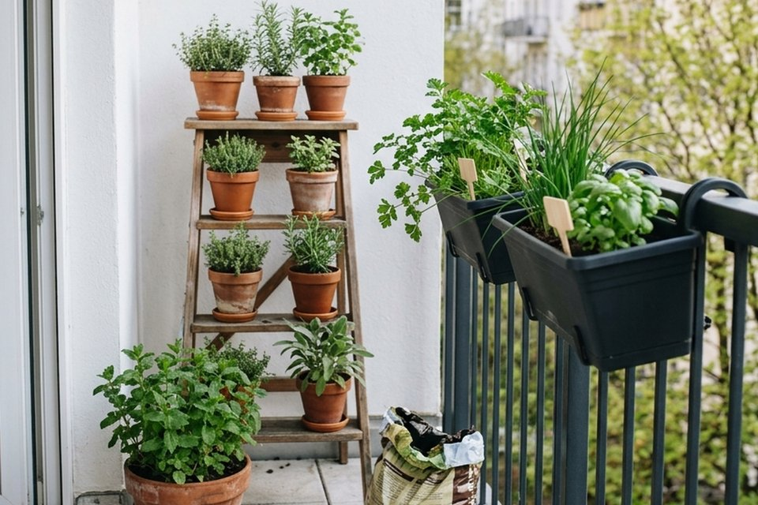

Kräutergarten auf dem Balkon ab 40 €
Frische Kräuter direkt vor der Küche – dafür reicht ein kleiner Balkon. Der Einstieg mit zwei Balkonkästen kostet rund 40 €. Jetzt im Winter planen, ab April pflanzen.
Welche Kräuter wohin?
In die Balkonkästen: Petersilie, Schnittlauch, Basilikum
Diese Kräuter mögen nährstoffreiche, gleichmäßig feuchte Erde und kommen auch mit Halbschatten zurecht. Basilikum ist kälteempfindlich – erst nach den Eisheiligen (Mitte Mai) dauerhaft nach draußen stellen.
In Terrakottatöpfe: Thymian, Rosmarin, Oregano, Salbei
Die Mittelmeerkräuter brauchen viel Sonne und magere, durchlässige Erde. Terrakotta lässt überschüssiges Wasser verdunsten. Eine Pflanzleiter bringt alle vier auf wenig Fläche unter.
Allein: Minze
Minze bildet Ausläufer und überwuchert andere Kräuter. Darum bekommt sie einen eigenen, etwas größeren Topf.
So legst du ihn an
1. Sonnigsten Platz suchen (Süd- oder Westbalkon ideal). 2. Kästen am Geländer einhängen, Töpfe auf die Leiter. 3. Kräutererde verwenden, für Mittelmeerkräuter mit etwas Sand mischen. 4. Lieber vorgezogene Pflanzen aus der Gärtnerei als Supermarkt-Kräuter – die stehen meist zu dicht und gehen schnell ein. 5. Morgens gießen, Staunässe vermeiden.
Einkaufsliste
| Was | Menge | ca. Preis |
|---|---|---|
| Balkonkästen mit Geländerhalterung | 2 | 16–30 € |
| Kräuter, vorgezogen (Gärtnerei) | 8 | 16–32 € |
| Kräutererde, 20 l | 1–2 | 5–12 € |
| Terrakottatöpfe mit Untersetzer | 5 | 15–30 € |
| Pflanzleiter aus Holz | 1 | 25–50 € |
| Kleine Gießkanne | 1 | 5–10 € |
Richtwerte für Deutschland, Stand November 2026. Die Preise schwanken je nach Händler und Saison.
Was kostet der Kräutergarten?
Einstieg – ca. 40 €: zwei Balkonkästen, sechs Kräuter, ein Sack Erde.
Komplett wie auf dem Bild – ca. 80–165 €: alles aus der Einkaufsliste.
Tipp: Thymian, Salbei, Oregano und Schnittlauch sind mehrjährig und kommen jedes Jahr wieder – Basilikum und Petersilie kauft man meist jedes Jahr neu.
Häufige Fragen
Funktioniert ein Kräutergarten auch auf dem Nordbalkon?
Eingeschränkt. Petersilie, Schnittlauch, Minze und Bärlauch kommen mit wenig Sonne zurecht, Rosmarin und Thymian nicht.
Was mache ich im Winter mit den Kräutern?
Thymian, Salbei und Schnittlauch überstehen den Winter draußen meist, wenn die Töpfe vor Nässe geschützt sind. Rosmarin lieber hell und kühl drinnen überwintern. Mehr frostharte Pflanzen: 8 winterharte Balkonpflanzen.